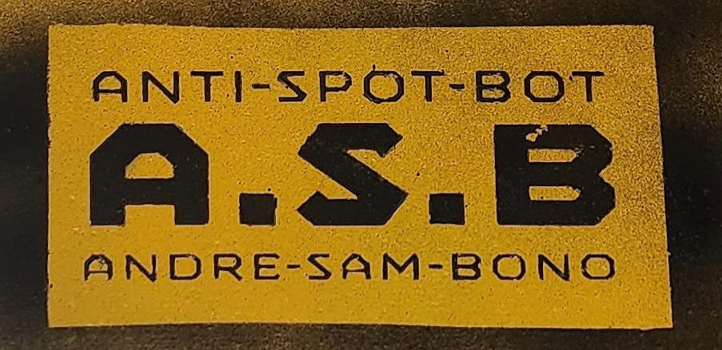
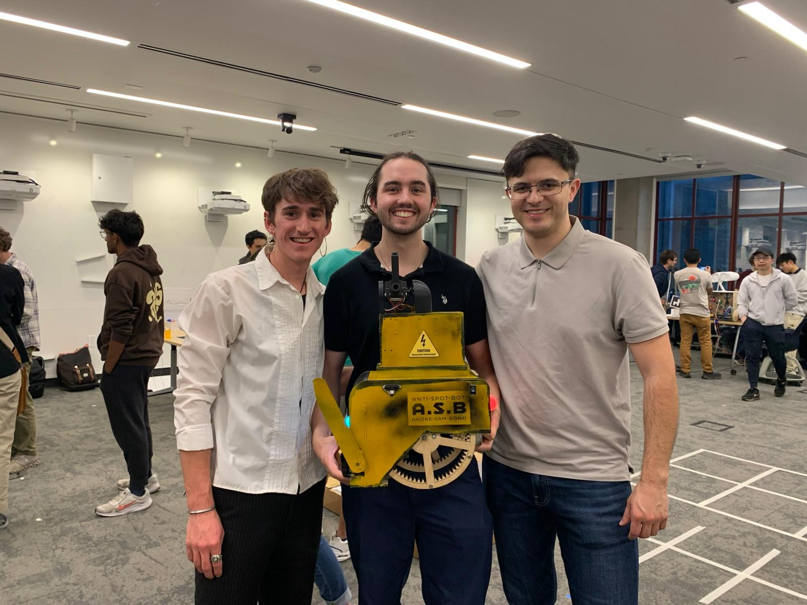

Robotics / Autonomous Systems
Anti-Spot-Bot
A proof-of-concept autonomous vehicle for roadside obstacle clearing and targeted fire-retardant deployment.

Anti-Spot-Bot Logo
Overview
Anti-Spot-Bot was the final project for the largest course in my bachelor's program at UC Santa Cruz. Working with two peers, I developed a proof-of-concept autonomous countermeasure vehicle designed to follow painted edge lines on highways or streets, detect and clear obstacles, and deploy fire-retardant pellets into adjacent fire-prone brush.
The project had three primary functional goals: autonomous line following and movement, obstacle clearing, and target engagement by aiming and firing a pellet at a designated target.

Anti-Spot-Bot project team
Contribution
I focused on the complete 3D CAD and mechanical design, as well as the robot's line-following capabilities. The vehicle was constructed from plywood and custom 3D-printed components.
The electronics included a UNO32 microcontroller, relays, a custom protoboard, a solenoid with a capacitor-bank assembly, and an infrared sensor array for detecting and following the taped line.
Anti-Spot-Bot working demonstration
Demo
The demonstration shows the robot following a highlighted white line. When its bumper detects an obstacle, the robot moves it out of the way. When it detects a target, it measures the target's width, aims at its center, fires a pellet, and continues the operating loop.
During the two-hour final demonstration, the robot continuously ran without failure. Its performance also drew interest from a retired California fire chief, who wanted to explore whether the concept could be developed further for real-world applications.